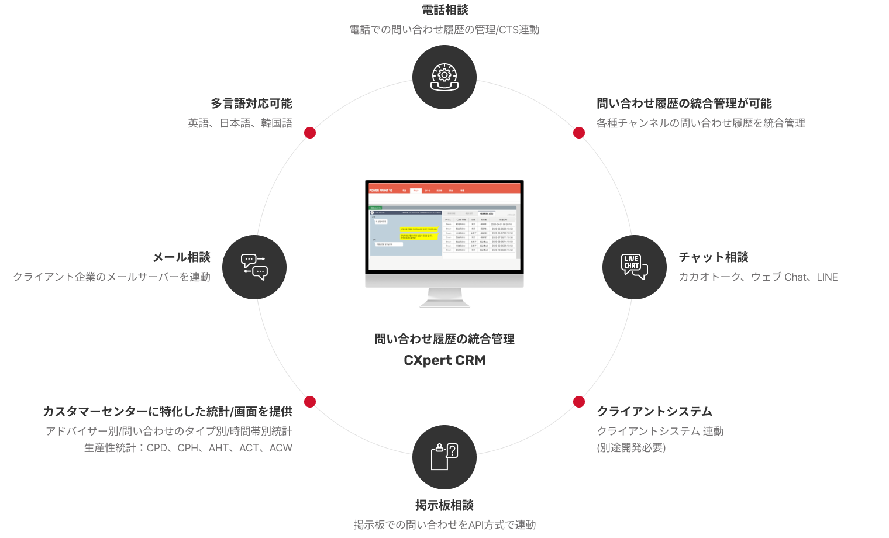
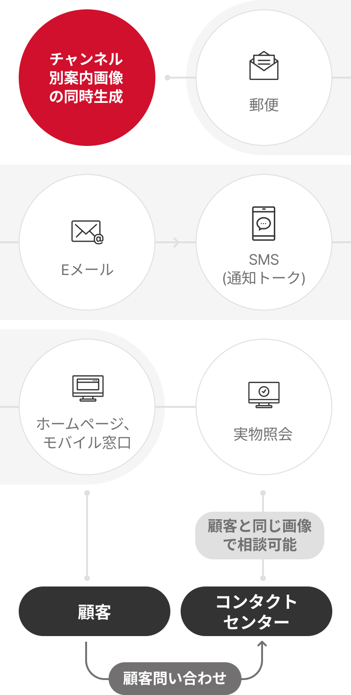

コンタクトセンターソリューション
顧客と効率的にコミュニケーションを図り応対するため、最新技術のコンタクトセンターソリューションを通じて、カスタマーサービスの効率性と満足度を向上させます。
-
統合CRMソリューション
(Powerfront)統合CRMソリューションは、電話、Eメール、掲示板、チャットなど様々な顧客接点チャンネルを一つの画面で管理できる顧客カスタマイズ型統合問い合わせソリューションです。様々なチャンネルから寄せられた問い合わせをオムニチャネルサービスを通じて一つの画面で確認でき、顧客の問い合わせ履歴や応対タイプの統合管理など、カスタマーセンターの運営に効果的な機能を提供し、問い合わせ相談の効率を最大化します。
問い合わせ履歴の統合管理 CXpert CRM
-
- 電話相談
- 電話での問い合わせ履歴の管理/CTS連動
-
- 問い合わせ履歴の統合管理が可能
- 各種チャンネルの問い合わせ履歴を統合管理
-
- チャット相談
- カカオトーク、ウェブ Chat、LINE
-
- クライアントシステム
- クライアントシステム 連動(別途開発必要)
-
- 掲示板相談
- 掲示板での問い合わせをAPI方式で連動
-
- カスタマーセンターに特化した統計/画面を提供
- アドバイザー別/問い合わせのタイプ別/時間帯別統計
- 生産性統計：CPD、CPH、AHT、ACT、ACW
-
- メール相談
- クライアント企業のメールサーバーを連動
-
- 多言語対応可能
- 英語、日本語、韓国語
-
-
STT/TAソリューション
(Transpeech)transpeechはトランスコスモスコリアが独自開発したクラウドベースの音声認識分析ソリューションで、コールシステムの音声データをテキストに変換し必要なデータを分析、導出します。導出したデータを基に、オペレーターにはリアルタイムスクリプトの推薦、問い合わせ履歴の自動要約などの相談サポート機能を提供し、カスタマーセンター管理者には相談モニタリング、自動品質評価など、問い合わせ品質の強化やVOC分析、管理をサポートする様々な機能を提供し、コンタクトセンター運営の効率を向上させます。
- コールシステム
- 回数分離サーバー
- transpeech
-
- STT(Speech To Text)
- 音声をテキストに変換
- STTエンジン、音響モデル、言語モデル
- 最終変換されたテキストデータをTA領域に送信
-
- TA(Text Analysis)
- テキストに変換された内容を分析し、必要な機能に変換
- 分析エンジン(相談アシスタント, セルフ必須案内モニタリング, リアルタイムの問い合わせ状況ダッシュボード, 問い合わせの品質評価, VOC/課題/キーワード分析, 単語辞書管理, 相談アシスタント管理, 問い合わせの品質評価表管理, その他)
- transpeech
- API
- クライアント企業のシステム
-
WFMソリューション
トランスコスモスコリアが独自開発したWFM(Workforce Management)ソリューションは、最新のマシンラーニングとディープラーニング基盤のグローバル標準予測モデルが適用されており、運営現場のノウハウが反映され差別化されたカスタマーセンター入電呼/人材の予測管理ソリューションです。また、ソリューション導入前後のデータ分析コンサルティングにより、クライアント企業に最適化された予測モデル、アウトレイヤー基準、イベントの影響も分析するサービスを同時に提供し、クライアント企業がWFMソリューションの活用を最大化できるようにサポートします。
-
見えるARSソリューション
音声案内とウェブ画面案内を同時に提供し、顧客が画面をタッチしながらARSを利用するソリューションです。オペレーターの案内なしに、顧客が自ら解決することができ、顧客満足度の向上と問い合わせ効率の向上が期待できます。
-
メッセンジャー基盤のコラボレーションツールソリューション
(カカオワーク)トランスコスモスコリアはカカオワーク(総合業務プラットフォーム)の公式リセラーパートナーとして販売権を持ち、ソリューション導入に関するコンサルティング、カスタム開発、顧客の問い合わせなど関連システム統合プロジェクトを担っています。
-
カカオ相談トーク&
カカオチャンネルチャットボットカカオトークチャンネルのチャットボットは、カカオのAI技術を基盤とし様々な問い合わせに対し自ら処理が可能なチャットボットソリューションです。単純な会話方式の応対だけでなく、登録、予約、注文など様々な機能を実装でき、オペレーターに接続が必要な場合、カカオ相談トークに切り替えてオペレーターと会話できるようになります。
-
チャット/チャットボットソリューション
(T-chat)トランスコスモスコリアの独自技術で開発したウェブチャットソリューションです。クライアント企業のホームページからオペレーターにリアルタイムで問い合わせができ、1人のオペレーターが複数の顧客と同時に応対できます。オペレーターに接続する前にチャットボットが作動し、FAQや注文照会、A/S受付のような単純な問い合わせに応対することで、顧客の自己処理率を高めることができます。
-
クラウドカスタマーセンターソリューション
(Genesys Cloud)ジェネシスクラウドソリューション基盤の統合カスタマーセンターソリューションによるパブリッククラウドプラットフォームで、急変するビジネス環境に機敏に対応可能なSaaSプラットフォームです。ジェネシスクラウドインフラの安定性、拡張性、利便性、柔軟なサービスを通じて、クライアント企業に最適なサービスを提供します。より速く、よりスマートなソリューションを基盤とし持続的なカスタマーエクスペリエンスとパーソナライズされた経験を提供します。
-
サービス管理CRMソリューション
(Salesforce Service Cloud)セールスフォースはグローバルNo.1 CRMであり、Fortune 500大企業の90%が使用している実績も豊かなプラットフォームです。サービスクラウドは、多様なチャンネルを通じて顧客と迅速に繋がることができるクラウドベースのオムニチャネルサービスプラットフォームです。製品購入からアフターケアまで、顧客データを統合管理し、カスタマイズされたサービス提供が可能で、寄せられた顧客の問い合わせを一目で確認し、迅速な処理が可能です。SMS/LMS、Eメール、CTIコールシステム連動など、様々なチャンネルに拡張・連動可能です。
-
見えるビデオ相談ソリューション
顧客とオペレーターが双方向コミュニケーションをとれるリアルタイムビデオ遠隔相談ソリューションで、オペレーターがリアルタイムで映像を見ながら速やかに措置し解決策を提示します。顧客が直接サービスセンターを訪問しなくても、サービス利用に制約がなく、すぐに専門家に問い合わせができます。
-
見える相談ソリューション
顧客とオペレーターが同時に同じ画面を見ながら直接相互操作が可能な非対面相談ソリューションです。別途のアプリをインストールすることなく、顧客が望む相談内容を音声で伝えると同時に画面で表示することで、内容に対する理解度を高め、問い合わせ時間は短縮し、相談効率を向上させます。
-
非対面本人確認ソリューション
金融サービスアプリを利用する際に必須で行われる非対面本人確認ソリューションです。口座開設、ローンなど本人確認が必要な対面業務を非対面本人確認ソリューションを通じて別途の訪問なしにワンストップで行います。
-
Push発送システムソリューション
スマートフォンPUSH大容量送信システムソリューションで、グループテンプレート管理、送信禁止時間設定、予約PUSH、モバイルアプリ機能との連携など、一つのシステムで簡単に統合PUSHシステムを管理できます。スマートフォンのアプリ通知機能を活用しSMS、MMSの送信コストを効率的に管理します。
-
非対面ビデオ面接ソリューション
ビデオ録画面接システムで面接者は時間と場所の制約なく面接を受けることができ、面接官は映像を確認後、面接結果を面接者にSMSで通知するソリューションです。
-
カカオワークfor大学
教育用カカオワークは、オン/オフライン連携学習のための教育空間の提供をはじめ、教師と学生の自由なコミュニケーションをサポートし、授業に役立つツールを活用できる総合コミュニケーションプラットフォームです。トランスコスモスコリアはカカオワークの公式リセラーパートナーとして販売権を持ち、ソリューション導入に関するコンサルティング、カスタム開発、顧客相談など関連システム統合プロジェクトを担っています。
バックオフィスソリューション
業務効率と自動化を高めるトランスコスモスのバックオフィスソリューションで業務プロセスを簡素化し、生産性を向上させます。
-
事務自動化RPAソリューション
RPA(Robotic Process Automation)は、単純な繰り返し業務をロボットソフトウェアを利用して自動化したソリューションで、ITインフラを整える必要がなく、簡単かつ手軽に導入が可能です。AIエンジンと事前に定義された業務シナリオを融合し、より迅速で正確な業務処理を提供します。
- RPA適用前
- 業務の割当, 単純な繰り返し作業(Human Resource)
- RPA適用後
- ロボット管理, 単純な繰り返し作業(Digital Workforce)
- 業務の割当, 高付加価値業務(Human Resource)
- 期待効果[コスト削減、効率的な資源活用、労働基準法遵守(週52時間)、スマートワーク基盤、業務生産性の向上(手作業比2~5倍)、データセキュリティ強化、ワークライフバランスの実践]
-
依頼業務管理ソリューション
(T-helpdesk)トランスコスモスコリアは、業務の協業過程で必要な全ての業務要請、処理、進行事項について悩みを抱えている顧客を対象に、双方向コミュニケーションをより円滑に行えるよう、協業ソリューションを提供します。また、業務進行状況について意見を残してメンバー間で業務を共有しあい、メッセンジャーのリアルタイム通知により、業務を迅速に確認できます。
- 業務依頼者
- 依頼登録
- 依頼管理システムt-helpdesk 連動 kakaowork
- 業務処理者
- 依頼処理
- 依頼管理システムt-helpdesk 連動 kakaowork
-
営業管理CRMソリューション
(Salesforce Sales Cloud)セールスフォースはグローバルNo.1 CRMであり、Fortune 500企業の90%が使用している実績も豊かなプラットフォームです。セールスクラウドは、不必要な繰り返し作業を最小化し、ワンストップでセールスプロセスの全てを管理する営業自動化プラットフォームです。営業情報、履歴、購入の有無などをChatter、Quip、Slackなどのツールを使い迅速かつ円滑にコミュニケーションをとり協業できるように、セールスプロセスにおける全段階を管理及びモニタリングし、フォーキャスティング管理及び効率的な意思決定をサポートするクラウドベースの営業支援(SFA)プラットフォームです。
伝統的なIT
-
企業管理領域
- アプリ
- データ
- ランタイム
- ミドルウェア
- 運営体制
- 仮想化
- サーバー
- ストレージ
- ネットワーク
IaaS (サービス型インフラ)
-
企業管理領域
- アプリ
- データ
- ランタイム
- ミドルウェア
- 運営体制
-
サービスとして提供される
- 仮想化
- サーバー
- ストレージ
- ネットワーク
PaaS (サービス型プラットフォーム)
-
企業管理領域
- アプリ
- データ
-
サービスとして提供される
- ランタイム
- ミドルウェア
- 運営体制
- 仮想化
- サーバー
- ストレージ
- ネットワーク
SaaS (サービス型ソフトウェア)
-
サービスとして提供される
- アプリ
- データ
- ランタイム
- ミドルウェア
- 運営体制
- 仮想化
- サーバー
- ストレージ
- ネットワーク
-
企業管理領域
-
営業管理ソリューション
(T-Sales)トランスコスモスコリアは、クライアント企業の営業過程で必要な全ての営業データを収集し、管理するソリューションを提供します。案件ごとのパイプラインを通じて営業の進捗状況を把握し、NICE企業情報に連動し別途の資料調査なしに企業情報を確認することができます。また、実質的な営業活動を管理しやすく、クライアント企業に対して専門性と信頼性の高い営業活動を展開でき、収集されたデータに基づいて追加案件発掘のためのデータ分析基礎資料の提供も行います。T-SALESは自社開発したソリューションであり、顧客の環境に合わせてカスタマイズ構築が可能です。
- 営業組織
- DB収集
- 営業管理システム(t-Sales) 連動 Googleカレンダー, NICE企業情報
- 営業企画
- DB分析
- 営業管理システム(t-Sales) 連動 Googleカレンダー, NICE企業情報
ダイレクトメールソリューション
パーソナライズされたダイレクトメールの送信と効果的なマーケティングのためのトランスコスモスコリアのダイレクトメールソリューションで顧客とのつながりを強化します。
-
DMオムニチャネルソリューション
郵便、Eメール、モバイルチャンネルに同じコンテンツを同時に作成・発送できるソリューションを提供します。
-
Quadient(GMC)ソリューション
トランスコスモスコリアは、Quadientの公式リセラーパートナーとして、グローバルNo.1文書生成ソリューションの導入コンサルティングから開発及び構築、顧客相談などの関連システム統合サービスを提供します。
-
Naver電子文書流通ソリューション
Naver公認電子文書流通サービスと連携し、法的効力が必要な電子文書の発送、履歴を管理します。書留郵便物の代わりに電子文書を発送することで、コスト削減効果及び環境にやさしい業務導入の効果が期待できます。
-
Naver個人認証ソリューション
モバイルを通じて手軽に本人確認ができるソリューションです。
-
保険会社の約款管理ソリューション
保険会社の約款管理及びカスタマイズされた約款作成を通じて、法規制対応が可能な約款管理サービスを提供します。デジタル約款だけでなく、出力まで可能なトータルサービスを提供し、コスト削減及びプロセス改善効果を提供します。
-
実物照会ソリューション
郵便、Eメール、モバイルを通じて顧客が受け取った案内文書と同じ文書の保管/照会/再送信ソリューションを提供します。顧客と同じ文書を見ながら顧客のクレームに効果的に対応することができ、顧客が望むチャンネルにリアルタイムで再送信が可能です。